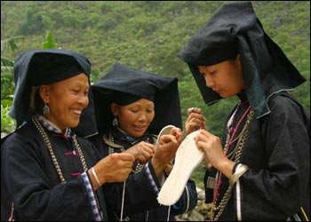
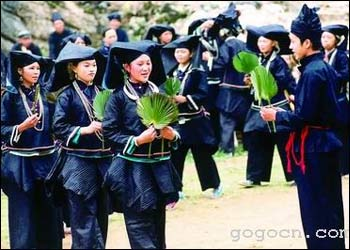
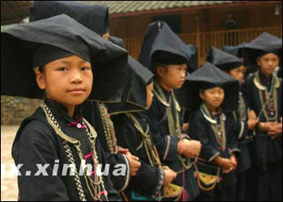

这高亢嘹亮的歌声属于中国广西壮民族一个奇特的族群－－黑衣壮。歌曲无伴奏、清新亮丽，有如“山野来风”给人一种心灵的震撼。也许您对这组黑衣壮山歌并不陌生，广西那坡“尼（读nei）的呀”合唱团曾带着它，于2001年走上了第三届中国南宁国际民歌节舞台、2004年走进了中央电视台春节晚会。黑衣壮山歌已经唱响广西、唱响中国，如今它的目标是要唱出国门，走向世界……2005年九月下旬，来自广西音乐家协会的十几位词曲作家，专程从南宁赶到百色市那坡县，为那坡“尼的呀”合唱团作辅导。专家们和着音乐节拍，为演员讲解歌曲内涵。大家如此认真地投入排练，是为了一台名为“神秘尼的呀”的民歌演唱会。这台由广西音乐家协会组织创作、展现当地黑衣壮浓郁民族风情的演唱会，将安排在今年年底进行出国访问演出。

演员们在演唱“黑衣壮”山歌那坡“尼的呀”合唱团团长黄和东告诉记者，“尼的呀”在壮语中是“好得很”的意思。他说，黑衣壮的山歌真是“好得很”，非常有特色。每次听完，他都会有一种震撼的感觉。出于对黑衣壮音乐的热爱，四年来黄和东一直带领合唱团，参加各种演出，在这里挥洒自己的青春和热血。说起黑衣壮山歌，他如数家珍。
“黑衣壮的山歌分六种，传唱方式一般是日常生活的方方面面。接待客人的时候是歌，敬酒的时候也是歌，所以能够世代传承下来。我就感觉它实在太美，曲调高亢嘹亮，不能再让它埋在深山里面了。”
广西音乐家协会主席傅馨三年前曾率部分词曲作家前往那坡县对黑衣壮山歌进行采风。那是他第一次接触黑衣壮山歌，当时感觉心灵最柔弱的地方被歌声撞击了一下，永远难忘。
“天籁般的声音，穿透层层山峰，像一股清风扑面而来，像一股清泉向你身边流过。而且高亢嘹亮，很纯净。音乐太美了，太动人了，真的。所以当时我写黑衣壮作品，脑海里就充满了这个意境。”
傅馨说，黑衣壮的“尼的呀”山歌将来也会像维吾尔族的“亚克西”、藏族的“巴扎嘿”一样成为广西壮族标志性的音乐符号，为世界各地的人们所熟知。
“我们用民歌无伴奏合唱这么一种形式来打造黑衣壮。音乐里最高的形式就是无伴奏合唱，它本身来自于民间，那坡有这个条件。我们就用他们这种天然的、不加雕饰的嗓子。从创作的观点，也要保持这种少数民族风格，以原生态的东西推向国际市场，把黑衣壮尼的呀音乐打造成为广西音乐的符号。”
随着黑衣壮的山歌在山外越唱越响，山外的人们琢磨着，大山里是什么样一个环境，竟然可以孕育如此神秘而又富有穿透力的歌声？于是，山歌开始领着山外客走进大山。黑衣壮在世人面前逐渐揭开了神秘的面纱。

一群黑衣壮族儿童广西黑衣壮族群，主要分布在百色右江大石山区的那坡县。这个人口不足二十万的小县，壮族占了总人口的90.6％，其中属于黑衣壮支系的就有近6万。
黑衣壮自古崇尚黑色，以黑为美，以银为贵。黑色，成为了他们的一种民族标记，千年不变地传承下来。独特的民族标记、鲜明的族群性格，以及在婚姻、宗教和生产、生活方面沿袭着原汁原味的传统习俗，使得黑衣壮被称为壮族的“活化石”。
沿着古老的山道，穿过厚重的山寨石门，记者来到了那坡县城厢镇龙华村的吞力屯，亲身感受那里的黑衣壮风情。
黑衣壮人热情、好客。还没走到寨口，就远远听见迎客的歌声。走近一瞧，几十个黑衣壮人早已站在寨口，手捧农家酒，迎接客人到来。只见他们全身上下清一色靛蓝黑色打扮，黑头巾、黑衣、黑裤、黑布鞋，黑得奇特，黑得让人震撼。加上妇女们头上的银钗，颈上的银链，在阳光下闪耀着点点星光，十分动人。
黑衣壮人以酒代茶，边唱山歌边敬酒，客人接过酒杯后，要一饮而尽，千万不要把酒倒在地上，不然黑衣壮人会认为你瞧不起他们。
走进吞力屯，首先映入眼帘的是一栋栋干栏式木楼。这是典型的壮族传统民居。在木楼前的空地，黑衣壮的青年男女开始为客人表演颇具特色的“黑枪舞”，以纪念先辈们勇敢的战斗精神。
生活在大山里的黑衣壮，人人从小就会唱山歌。黑衣壮的山歌反映爱情、反映劳作，内容十分丰富，也各成一套歌词。李海艳今年刚满19岁，她张口就给记者唱了一段高亢嘹亮的“过山腔”。海艳告诉记者，这是用来跟大山那头的人交流时唱的。
“平时在山上劳动，累了，就坐在石头上休息，然后对着大山唱山歌，看那边有没有人对。我们的声音好，还是靠着这里的大山。”
古朴的民俗，独特的村貌，亮丽的歌声，让前来一探黑衣壮究竟的游客们流连忘返。
“游客1：很有民族特色，声音很委婉，听起来非常悦耳”
“游客2：热情、大方，活泼、开朗。那个歌好听哦，特别动听。”
“游客3：我们几个摄影家在这里拍少数民族风情。第一次这么近距离接触，激动啊。特别是广西最有特点的，最有代表的少数民族，收获蛮大。”
随着当地旅游业的发展，黑衣壮人家也逐渐摆脱了贫困的生活状况。不少人家里有了电话、电视机等，与外界加强了信息沟通。今年45岁的壮族阿妈杨贵金，从未走出过大山，却也学会了普通话。
“我看电视学会了普通话。现在搞了旅游，天天都有游客来。生活比以前好多了，各家各户都可以送小孩上学，以前我们都送不上的。”
面对黑衣壮人家这些年发生的喜人变化，那坡县委宣传部副部长李永峰深有感触。
“那坡县打造黑衣壮文化品牌，树立了这么一种目标，就是不仅仅弘扬优秀的民族文化，更是用文化向贫困挑战，走一条文化脱贫之路。通过整合民族资源，发展文化旅游，在加大旅游开发同时，注重对民族文化资源的保护，最终拉动经济发展，让群众脱贫致富。”
听了李副部长的一番话，我们也充满了信心。我们有理由相信，这神秘而又美丽的黑衣壮，必将会拥有更美好的明天！
听众朋友，刚才您听到的是由中国广西人民广播电台制作的录音报道《壮族“花海”里的一朵奇葩－－黑衣壮》。节目撰稿莫新华、朱莹莹，编审闭汉祥，播音陈锋，感谢您的收听。欢迎明天同一时间继续收听中国国际广播电台华语台的《中国之窗》节目。